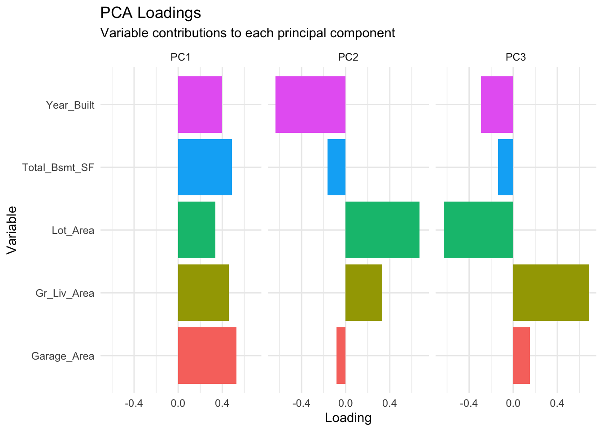

library(tidymodels)
library(tidyverse)
library(tidyclust) # For clustering with tidymodels
library(cluster) # For clustering algorithms
library(factoextra) # For visualization
library(dendextend) # For dendrograms
library(dbscan) # For DBSCAN
library(ggfortify) # For PCA plots
library(plotly) # For 3D visualizations
library(corrplot) # For correlation plots
# Set theme and seed
theme_set(theme_minimal())
set.seed(123)
# Load data
data(ames)
# Prepare data for unsupervised learning
ames_numeric <- ames %>%
select(where(is.numeric)) %>%
select(-Sale_Price) %>% # Remove target for unsupervised learning
na.omit() %>%
slice_sample(n = 500) # Sample for computational efficiencyChapter 17: Unsupervised Learning - Discovering Hidden Patterns
Learning Objectives
By the end of this chapter, you will master:
- The fundamentals of unsupervised learning
- Clustering algorithms (K-means, hierarchical, DBSCAN)
- Dimensionality reduction (PCA, t-SNE, UMAP)
- Anomaly detection techniques
- Market basket analysis and association rules
- Practical implementation with tidymodels
- Evaluating unsupervised models
- Real-world applications
Download R Script
You can download the complete R code for this chapter: 📥 Download 17-unsupervised-learning.R
The Art of Finding Structure Without Labels
Imagine you’re an explorer discovering a new continent. You have no map, no guide, just raw observations. Your task is to identify natural groupings - mountain ranges, river systems, ecosystems. This is the essence of unsupervised learning: finding structure in data without predefined categories.
Unlike supervised learning where we have labels to guide us, unsupervised learning must discover patterns purely from the data itself. This makes it both challenging and powerful - we can uncover insights we didn’t even know to look for.
Clustering: Finding Natural Groups
K-Means Clustering
K-means is the workhorse of clustering algorithms. It partitions data into K clusters by minimizing within-cluster variance:
# Prepare data for clustering
clustering_data <- ames_numeric %>%
select(Gr_Liv_Area, Lot_Area, Year_Built, Total_Bsmt_SF, Garage_Area)
# Scale the data (crucial for distance-based methods!)
scaled_data <- scale(clustering_data)
# Determine optimal number of clusters using elbow method
wss <- map_dbl(1:10, function(k) {
kmeans(scaled_data, centers = k, nstart = 25)$tot.withinss
})
elbow_data <- tibble(k = 1:10, wss = wss)
ggplot(elbow_data, aes(x = k, y = wss)) +
geom_line(linewidth = 1) +
geom_point(size = 3) +
geom_vline(xintercept = 4, linetype = "dashed", color = "red") +
labs(
title = "Elbow Method for Optimal K",
subtitle = "Look for the 'elbow' where WSS decrease slows",
x = "Number of Clusters (k)",
y = "Total Within-Cluster Sum of Squares"
)# Silhouette analysis for cluster validation
silhouette_scores <- map_dbl(2:10, function(k) {
km <- kmeans(scaled_data, centers = k, nstart = 25)
ss <- silhouette(km$cluster, dist(scaled_data))
mean(ss[, 3])
})
silhouette_data <- tibble(k = 2:10, silhouette = silhouette_scores)
ggplot(silhouette_data, aes(x = k, y = silhouette)) +
geom_line(linewidth = 1) +
geom_point(size = 3) +
geom_vline(xintercept = which.max(silhouette_scores) + 1,
linetype = "dashed", color = "blue") +
labs(
title = "Silhouette Analysis",
subtitle = "Higher values indicate better-defined clusters",
x = "Number of Clusters (k)",
y = "Average Silhouette Score"
)# Perform K-means with optimal k=4
km_result <- kmeans(scaled_data, centers = 4, nstart = 25)
# Add cluster assignments back to data
clustered_data <- clustering_data %>%
mutate(cluster = factor(km_result$cluster))
# Visualize clusters
p1 <- ggplot(clustered_data, aes(x = Gr_Liv_Area, y = Lot_Area,
color = cluster)) +
geom_point(size = 2, alpha = 0.7) +
labs(title = "Clusters: Living Area vs Quality")
p2 <- ggplot(clustered_data, aes(x = Year_Built, y = Total_Bsmt_SF,
color = cluster)) +
geom_point(size = 2, alpha = 0.7) +
labs(title = "Clusters: Year vs Basement")
library(patchwork)
p1 + p2
# Cluster characteristics
cluster_profiles <- clustered_data %>%
group_by(cluster) %>%
summarise(across(everything(), list(mean = mean, sd = sd)),
count = n()) %>%
pivot_longer(cols = -c(cluster, count),
names_to = c("variable", "stat"),
names_sep = "_(?=mean|sd)") %>%
pivot_wider(names_from = stat, values_from = value)
knitr::kable(cluster_profiles, digits = 2)| cluster | count | variable | mean | sd |
|---|---|---|---|---|
| 1 | 8 | Gr_Liv_Area | 2513.38 | 925.13 |
| 1 | 8 | Lot_Area | 56046.50 | 24669.55 |
| 1 | 8 | Year_Built | 1984.50 | 17.14 |
| 1 | 8 | Total_Bsmt_SF | 1550.62 | 764.04 |
| 1 | 8 | Garage_Area | 793.00 | 181.72 |
| 2 | 175 | Gr_Liv_Area | 1296.11 | 409.47 |
| 2 | 175 | Lot_Area | 8466.14 | 3142.00 |
| 2 | 175 | Year_Built | 1937.54 | 20.35 |
| 2 | 175 | Total_Bsmt_SF | 784.01 | 293.47 |
| 2 | 175 | Garage_Area | 294.43 | 166.78 |
| 3 | 236 | Gr_Liv_Area | 1397.47 | 306.68 |
| 3 | 236 | Lot_Area | 9413.75 | 4132.14 |
| 3 | 236 | Year_Built | 1986.24 | 17.40 |
| 3 | 236 | Total_Bsmt_SF | 1065.54 | 295.28 |
| 3 | 236 | Garage_Area | 487.47 | 131.59 |
| 4 | 81 | Gr_Liv_Area | 2146.53 | 465.84 |
| 4 | 81 | Lot_Area | 13104.25 | 4393.41 |
| 4 | 81 | Year_Built | 1991.11 | 21.57 |
| 4 | 81 | Total_Bsmt_SF | 1577.49 | 436.29 |
| 4 | 81 | Garage_Area | 752.70 | 171.67 |
The mathematics of K-means: - Objective: Minimize \(\sum_{i=1}^{k} \sum_{x \in C_i} ||x - \mu_i||^2\) - Algorithm: Iteratively assign points and update centroids - Assumptions: Spherical clusters, similar sizes, similar densities
Hierarchical Clustering
Hierarchical clustering builds a tree of clusters, allowing exploration at different granularities:
# Calculate distance matrix
dist_matrix <- dist(scaled_data, method = "euclidean")
# Perform hierarchical clustering with different linkage methods
hc_complete <- hclust(dist_matrix, method = "complete")
hc_average <- hclust(dist_matrix, method = "average")
hc_ward <- hclust(dist_matrix, method = "ward.D2")
# Compare dendrograms
par(mfrow = c(1, 3))
plot(hc_complete, main = "Complete Linkage", labels = FALSE, xlab = "")
plot(hc_average, main = "Average Linkage", labels = FALSE, xlab = "")
plot(hc_ward, main = "Ward's Method", labels = FALSE, xlab = "")par(mfrow = c(1, 1))
# Use Ward's method (often gives best results)
hc_clusters <- cutree(hc_ward, k = 4)
# Create a prettier dendrogram
dend <- as.dendrogram(hc_ward)
dend <- color_branches(dend, k = 4)
plot(dend, main = "Hierarchical Clustering Dendrogram",
leaflab = "none", ylab = "Height")# Compare with K-means
clustering_comparison <- tibble(
kmeans = km_result$cluster,
hierarchical = hc_clusters
)
# Confusion matrix between methods
table(clustering_comparison$kmeans, clustering_comparison$hierarchical)
1 2 3 4
1 0 0 0 8
2 0 63 110 2
3 3 229 1 3
4 66 12 1 2# Visualize both clustering results
comparison_data <- clustering_data %>%
mutate(
kmeans = factor(km_result$cluster),
hierarchical = factor(hc_clusters)
)
p1 <- ggplot(comparison_data, aes(x = Gr_Liv_Area, y = Lot_Area,
color = kmeans)) +
geom_point(size = 2) +
labs(title = "K-Means Clustering")
p2 <- ggplot(comparison_data, aes(x = Gr_Liv_Area, y = Lot_Area,
color = hierarchical)) +
geom_point(size = 2) +
labs(title = "Hierarchical Clustering")
p1 + p2DBSCAN: Density-Based Clustering
DBSCAN finds clusters of arbitrary shape and identifies outliers:
# Create data with non-spherical clusters
set.seed(456)
moon_data <- rbind(
# First crescent
tibble(
x = cos(seq(0, pi, length.out = 100)) + rnorm(100, sd = 0.1),
y = sin(seq(0, pi, length.out = 100)) + rnorm(100, sd = 0.1),
true_cluster = 1
),
# Second crescent (shifted and flipped)
tibble(
x = 1 - cos(seq(0, pi, length.out = 100)) + rnorm(100, sd = 0.1),
y = -0.5 - sin(seq(0, pi, length.out = 100)) + rnorm(100, sd = 0.1),
true_cluster = 2
),
# Noise points
tibble(
x = runif(20, -1, 2),
y = runif(20, -2, 1),
true_cluster = 0
)
)
# Try K-means (will fail on non-spherical clusters)
km_moon <- kmeans(moon_data[, c("x", "y")], centers = 2)
# DBSCAN
db_result <- dbscan(moon_data[, c("x", "y")], eps = 0.3, minPts = 5)
# Compare results
moon_results <- moon_data %>%
mutate(
kmeans = factor(km_moon$cluster),
dbscan = factor(db_result$cluster)
)
p1 <- ggplot(moon_results, aes(x = x, y = y, color = factor(true_cluster))) +
geom_point(size = 2) +
labs(title = "True Clusters", color = "Cluster") +
scale_color_manual(values = c("0" = "gray", "1" = "blue", "2" = "red"))
p2 <- ggplot(moon_results, aes(x = x, y = y, color = kmeans)) +
geom_point(size = 2) +
labs(title = "K-Means Result", color = "Cluster")
p3 <- ggplot(moon_results, aes(x = x, y = y, color = dbscan)) +
geom_point(size = 2) +
labs(title = "DBSCAN Result", color = "Cluster") +
scale_color_manual(values = c("0" = "gray", "1" = "blue", "2" = "red"))
p1 + p2 + p3
# Apply DBSCAN to housing data
# Find optimal eps using k-nearest neighbor distance
knn_dist <- kNNdist(scaled_data, k = 5)
knn_dist_sorted <- sort(knn_dist)
plot(knn_dist_sorted, type = "l",
main = "K-NN Distance Plot for eps Selection",
xlab = "Points sorted by distance",
ylab = "5-NN Distance")
abline(h = 1.5, col = "red", lty = 2)# Apply DBSCAN
db_housing <- dbscan(scaled_data, eps = 1.5, minPts = 5)
# Analyze results
dbscan_summary <- tibble(
cluster = db_housing$cluster
) %>%
count(cluster) %>%
mutate(
type = if_else(cluster == 0, "Noise", paste("Cluster", cluster))
)
knitr::kable(dbscan_summary)| cluster | n | type |
|---|---|---|
| 0 | 18 | Noise |
| 1 | 482 | Cluster 1 |
Dimensionality Reduction
Principal Component Analysis (PCA)
PCA finds the directions of maximum variance in high-dimensional data:
# Perform PCA
pca_result <- prcomp(scaled_data, center = FALSE, scale. = FALSE)
# Variance explained
variance_explained <- tibble(
PC = paste0("PC", 1:length(pca_result$sdev)),
var_explained = pca_result$sdev^2 / sum(pca_result$sdev^2),
cumulative_var = cumsum(var_explained)
)
ggplot(variance_explained[1:10, ], aes(x = PC, y = var_explained)) +
geom_col(fill = "steelblue") +
geom_line(aes(y = cumulative_var, group = 1), color = "red", linewidth = 1) +
geom_point(aes(y = cumulative_var), color = "red", size = 2) +
labs(
title = "PCA: Variance Explained",
subtitle = "Red line shows cumulative variance",
x = "Principal Component",
y = "Proportion of Variance"
) +
scale_y_continuous(sec.axis = sec_axis(~., name = "Cumulative Variance"))# Biplot: variables and observations
autoplot(pca_result, data = clustered_data, colour = 'cluster',
loadings = TRUE, loadings.label = TRUE,
loadings.label.size = 3) +
labs(title = "PCA Biplot with Clusters")# Interpret principal components
loadings <- as.data.frame(pca_result$rotation[, 1:3])
loadings$variable <- rownames(loadings)
loadings_long <- loadings %>%
pivot_longer(cols = PC1:PC3, names_to = "PC", values_to = "loading")
ggplot(loadings_long, aes(x = variable, y = loading, fill = variable)) +
geom_col() +
facet_wrap(~PC) +
coord_flip() +
labs(
title = "PCA Loadings",
subtitle = "Variable contributions to each principal component",
x = "Variable",
y = "Loading"
) +
theme(legend.position = "none")
# Use PCA for visualization
pca_data <- as.data.frame(pca_result$x[, 1:3]) %>%
mutate(cluster = clustered_data$cluster)
# 2D visualization
ggplot(pca_data, aes(x = PC1, y = PC2, color = cluster)) +
geom_point(size = 2, alpha = 0.7) +
stat_ellipse(level = 0.95) +
labs(
title = "Clusters in PCA Space",
subtitle = "First two principal components",
x = paste0("PC1 (", round(variance_explained$var_explained[1] * 100, 1), "%)"),
y = paste0("PC2 (", round(variance_explained$var_explained[2] * 100, 1), "%)")
)# 3D visualization with plotly
plot_ly(pca_data, x = ~PC1, y = ~PC2, z = ~PC3, color = ~cluster,
type = "scatter3d", mode = "markers",
marker = list(size = 5)) %>%
layout(title = "3D PCA Visualization")The mathematics of PCA: - Objective: Find orthogonal axes maximizing variance - Method: Eigendecomposition of covariance matrix - Result: Linear combinations of original variables - Key insight: Most variance often captured in few components
t-SNE and UMAP: Non-linear Dimensionality Reduction
For complex, non-linear structures:
# t-SNE (computationally intensive, using sample)
library(Rtsne)
set.seed(123)
tsne_result <- Rtsne(scaled_data[1:200, ], dims = 2, perplexity = 30,
verbose = FALSE, max_iter = 500)
tsne_data <- as.data.frame(tsne_result$Y) %>%
set_names(c("tSNE1", "tSNE2")) %>%
mutate(cluster = clustered_data$cluster[1:200])
ggplot(tsne_data, aes(x = tSNE1, y = tSNE2, color = cluster)) +
geom_point(size = 2, alpha = 0.7) +
labs(
title = "t-SNE Visualization",
subtitle = "Non-linear dimensionality reduction preserves local structure"
)# Compare PCA vs t-SNE
comparison <- bind_rows(
pca_data[1:200, c("PC1", "PC2", "cluster")] %>%
mutate(method = "PCA") %>%
rename(Dim1 = PC1, Dim2 = PC2),
tsne_data %>%
mutate(method = "t-SNE") %>%
rename(Dim1 = tSNE1, Dim2 = tSNE2)
)
ggplot(comparison, aes(x = Dim1, y = Dim2, color = cluster)) +
geom_point(size = 2, alpha = 0.7) +
facet_wrap(~method, scales = "free") +
labs(
title = "PCA vs t-SNE",
subtitle = "t-SNE often reveals clearer cluster separation"
)Anomaly Detection
Identifying outliers and anomalies is crucial for many applications:
# Method 1: Statistical approach (Z-score)
z_scores <- abs(scale(scaled_data))
threshold <- 3
outliers_zscore <- which(rowSums(z_scores > threshold) > 0)
# Method 2: Isolation Forest
library(isotree)
iso_forest <- isolation.forest(scaled_data, ntrees = 100, sample_size = 256)
outlier_scores <- predict(iso_forest, scaled_data)
# Identify outliers (top 5% highest scores)
outlier_threshold <- quantile(outlier_scores, 0.95)
outliers_iforest <- which(outlier_scores > outlier_threshold)
# Method 3: Local Outlier Factor (LOF)
library(dbscan)
lof_scores <- lof(scaled_data, minPts = 10)
outliers_lof <- which(lof_scores > 1.5)
# Compare methods
outlier_comparison <- tibble(
index = 1:nrow(scaled_data),
z_score = index %in% outliers_zscore,
isolation_forest = index %in% outliers_iforest,
lof = index %in% outliers_lof
) %>%
mutate(
n_methods = z_score + isolation_forest + lof,
consensus_outlier = n_methods >= 2
)
# Visualize outliers in PCA space
outlier_pca <- bind_cols(
as.data.frame(pca_result$x[, 1:2]),
outlier_comparison
)
ggplot(outlier_pca, aes(x = PC1, y = PC2)) +
geom_point(aes(color = consensus_outlier), size = 2, alpha = 0.7) +
scale_color_manual(values = c("FALSE" = "gray", "TRUE" = "red"),
labels = c("Normal", "Outlier")) +
labs(
title = "Anomaly Detection Results",
subtitle = "Points identified as outliers by at least 2 methods",
color = "Status"
)# Examine outlier characteristics
outlier_indices <- which(outlier_comparison$consensus_outlier)
outlier_analysis <- clustering_data[outlier_indices, ] %>%
summarise(across(everything(), list(mean = mean, median = median)))
normal_analysis <- clustering_data[-outlier_indices, ] %>%
summarise(across(everything(), list(mean = mean, median = median)))
cat("Outlier characteristics vs normal points:\n")Outlier characteristics vs normal points:print(outlier_analysis)# A tibble: 1 × 10
Gr_Liv_Area_mean Gr_Liv_Area_median Lot_Area_mean Lot_Area_median
<dbl> <int> <dbl> <int>
1 2403. 2338 33529. 26400
# ℹ 6 more variables: Year_Built_mean <dbl>, Year_Built_median <int>,
# Total_Bsmt_SF_mean <dbl>, Total_Bsmt_SF_median <dbl>,
# Garage_Area_mean <dbl>, Garage_Area_median <dbl>print(normal_analysis)# A tibble: 1 × 10
Gr_Liv_Area_mean Gr_Liv_Area_median Lot_Area_mean Lot_Area_median
<dbl> <int> <dbl> <int>
1 1462. 1414 9413. 9260
# ℹ 6 more variables: Year_Built_mean <dbl>, Year_Built_median <int>,
# Total_Bsmt_SF_mean <dbl>, Total_Bsmt_SF_median <dbl>,
# Garage_Area_mean <dbl>, Garage_Area_median <dbl>Market Basket Analysis
Discover associations in transactional data:
# Create synthetic transaction data
set.seed(789)
n_transactions <- 1000
# Housing features that might be purchased together
features <- c("Granite_Counters", "Hardwood_Floors", "Central_AC",
"Updated_Kitchen", "Finished_Basement", "Deck",
"Pool", "Security_System", "Smart_Home", "Solar_Panels")
# Generate transactions with realistic patterns
transactions <- map(1:n_transactions, function(i) {
# Base probability for each item
probs <- c(0.3, 0.4, 0.6, 0.35, 0.25, 0.3, 0.1, 0.2, 0.15, 0.05)
# Adjust probabilities based on correlations
selected <- c()
for (j in 1:length(features)) {
# Increase probability if related items selected
adj_prob <- probs[j]
if ("Granite_Counters" %in% selected && features[j] == "Updated_Kitchen") {
adj_prob <- min(1, adj_prob * 3)
}
if ("Smart_Home" %in% selected && features[j] == "Security_System") {
adj_prob <- min(1, adj_prob * 2.5)
}
if ("Pool" %in% selected && features[j] == "Deck") {
adj_prob <- min(1, adj_prob * 2)
}
if (runif(1) < adj_prob) {
selected <- c(selected, features[j])
}
}
selected
})
# Convert to transaction matrix
library(arules)
trans_matrix <- as(transactions, "transactions")
# Find association rules
rules <- apriori(trans_matrix,
parameter = list(supp = 0.05, conf = 0.5, target = "rules"))
# Inspect top rules
top_rules <- head(sort(rules, by = "lift"), 10)
inspect(top_rules)
# Visualize rules
library(arulesViz)
plot(rules, method = "graph",
control = list(type = "items", alpha = 0.7),
main = "Association Rules Network")
# Create rule quality metrics
rule_metrics <- as(rules, "data.frame") %>%
as_tibble() %>%
separate(rules, into = c("lhs", "rhs"), sep = " => ") %>%
arrange(desc(lift))
ggplot(rule_metrics %>% head(20),
aes(x = support, y = confidence, size = lift, color = lift)) +
geom_point(alpha = 0.7) +
scale_size_continuous(range = c(2, 10)) +
scale_color_viridis_c() +
labs(
title = "Association Rules Quality",
subtitle = "Size and color represent lift",
x = "Support",
y = "Confidence"
)Evaluating Unsupervised Models
Without labels, evaluation is challenging but crucial:
# Internal validation metrics for clustering
evaluate_clustering <- function(data, clusters) {
# Silhouette coefficient
sil <- silhouette(clusters, dist(data))
avg_silhouette <- mean(sil[, 3])
# Calinski-Harabasz Index
ch_index <- cluster.stats(dist(data), clusters)$ch
# Davies-Bouldin Index (lower is better)
db_index <- cluster.stats(dist(data), clusters)$dunn
# Within-cluster sum of squares
wcss <- sum(cluster.stats(dist(data), clusters)$within.cluster.ss)
tibble(
avg_silhouette = avg_silhouette,
calinski_harabasz = ch_index,
davies_bouldin = db_index,
wcss = wcss
)
}
# Compare different clustering solutions
clustering_methods <- list(
kmeans_3 = kmeans(scaled_data, 3, nstart = 25)$cluster,
kmeans_4 = kmeans(scaled_data, 4, nstart = 25)$cluster,
kmeans_5 = kmeans(scaled_data, 5, nstart = 25)$cluster,
hierarchical = cutree(hc_ward, k = 4)
)
evaluation_results <- map_df(clustering_methods,
~ evaluate_clustering(scaled_data, .),
.id = "method")
knitr::kable(evaluation_results, digits = 3)
# Stability analysis: How consistent are clusters?
stability_analysis <- function(data, k, n_bootstrap = 10) {
bootstrap_results <- map(1:n_bootstrap, function(i) {
# Bootstrap sample
sample_idx <- sample(1:nrow(data), replace = TRUE)
boot_data <- data[sample_idx, ]
# Cluster
kmeans(boot_data, centers = k, nstart = 10)$cluster
})
# Calculate pairwise agreement
agreements <- combn(n_bootstrap, 2, function(pair) {
cl1 <- bootstrap_results[[pair[1]]]
cl2 <- bootstrap_results[[pair[2]]]
# Adjusted Rand Index
mclust::adjustedRandIndex(cl1, cl2)
})
mean(agreements)
}
stability_scores <- tibble(
k = 2:6,
stability = map_dbl(2:6, ~ stability_analysis(scaled_data, ., n_bootstrap = 5))
)
ggplot(stability_scores, aes(x = k, y = stability)) +
geom_line(linewidth = 1) +
geom_point(size = 3) +
labs(
title = "Clustering Stability Analysis",
subtitle = "Higher scores indicate more stable clusters",
x = "Number of Clusters",
y = "Average Adjusted Rand Index"
)Real-World Applications
Customer Segmentation
# Simulate customer data
set.seed(123)
n_customers <- 1000
customer_data <- tibble(
customer_id = 1:n_customers,
age = round(rnorm(n_customers, 45, 15)),
income = round(rlnorm(n_customers, 11, 0.5)),
spending_score = round(runif(n_customers, 1, 100)),
purchase_frequency = rpois(n_customers, lambda = 5),
avg_transaction = round(rlnorm(n_customers, 4, 0.5)),
online_engagement = round(runif(n_customers, 0, 100))
) %>%
mutate(
age = pmax(18, pmin(80, age)),
income = pmax(20000, pmin(200000, income))
)
# Preprocessing
customer_scaled <- customer_data %>%
select(-customer_id) %>%
scale()
# Segment customers
customer_segments <- kmeans(customer_scaled, centers = 4, nstart = 25)
# Profile segments
customer_profiles <- customer_data %>%
mutate(segment = factor(customer_segments$cluster)) %>%
group_by(segment) %>%
summarise(
count = n(),
avg_age = mean(age),
avg_income = mean(income),
avg_spending = mean(spending_score),
avg_frequency = mean(purchase_frequency),
avg_transaction_value = mean(avg_transaction),
avg_engagement = mean(online_engagement)
)
knitr::kable(customer_profiles, digits = 0)| segment | count | avg_age | avg_income | avg_spending | avg_frequency | avg_transaction_value | avg_engagement |
|---|---|---|---|---|---|---|---|
| 1 | 170 | 51 | 123792 | 52 | 5 | 55 | 42 |
| 2 | 349 | 47 | 57856 | 24 | 5 | 51 | 51 |
| 3 | 131 | 45 | 63800 | 50 | 5 | 122 | 51 |
| 4 | 350 | 41 | 55388 | 74 | 5 | 52 | 50 |
# Visualize segments
customer_pca <- prcomp(customer_scaled)
customer_viz <- as.data.frame(customer_pca$x[, 1:2]) %>%
mutate(segment = factor(customer_segments$cluster))
ggplot(customer_viz, aes(x = PC1, y = PC2, color = segment)) +
geom_point(alpha = 0.5) +
stat_ellipse(level = 0.95) +
labs(
title = "Customer Segments",
subtitle = "Four distinct customer groups identified"
)# Segment characteristics
segment_names <- c(
"1" = "High-Value Engaged",
"2" = "Young Browsers",
"3" = "Loyal Regulars",
"4" = "Occasional Shoppers"
)
customer_profiles %>%
mutate(segment_name = segment_names[as.character(segment)]) %>%
select(segment_name, everything(), -segment) %>%
knitr::kable(digits = 0)| segment_name | count | avg_age | avg_income | avg_spending | avg_frequency | avg_transaction_value | avg_engagement |
|---|---|---|---|---|---|---|---|
| High-Value Engaged | 170 | 51 | 123792 | 52 | 5 | 55 | 42 |
| Young Browsers | 349 | 47 | 57856 | 24 | 5 | 51 | 51 |
| Loyal Regulars | 131 | 45 | 63800 | 50 | 5 | 122 | 51 |
| Occasional Shoppers | 350 | 41 | 55388 | 74 | 5 | 52 | 50 |
Best Practices
1. Data Preprocessing is Critical
# Demonstrate importance of scaling
unscaled_clusters <- kmeans(clustering_data, centers = 3, nstart = 25)
scaled_clusters <- kmeans(scaled_data, centers = 3, nstart = 25)
# Compare results
comparison_data <- clustering_data %>%
mutate(
unscaled = factor(unscaled_clusters$cluster),
scaled = factor(scaled_clusters$cluster)
)
p1 <- ggplot(comparison_data, aes(x = Gr_Liv_Area, y = Year_Built,
color = unscaled)) +
geom_point() +
labs(title = "Unscaled Data Clustering")
p2 <- ggplot(comparison_data, aes(x = Gr_Liv_Area, y = Year_Built,
color = scaled)) +
geom_point() +
labs(title = "Scaled Data Clustering")
p1 + p22. Choose the Right Algorithm
algorithm_guide <- tibble(
Scenario = c(
"Spherical, similar-sized clusters",
"Unknown number of clusters",
"Non-spherical clusters",
"Outliers present",
"Hierarchical structure",
"Large datasets",
"Mixed data types"
),
`Recommended Algorithm` = c(
"K-means",
"Hierarchical or DBSCAN",
"DBSCAN or Spectral",
"DBSCAN or Robust K-means",
"Hierarchical clustering",
"Mini-batch K-means",
"K-prototypes or Gower distance"
)
)
knitr::kable(algorithm_guide)| Scenario | Recommended Algorithm |
|---|---|
| Spherical, similar-sized clusters | K-means |
| Unknown number of clusters | Hierarchical or DBSCAN |
| Non-spherical clusters | DBSCAN or Spectral |
| Outliers present | DBSCAN or Robust K-means |
| Hierarchical structure | Hierarchical clustering |
| Large datasets | Mini-batch K-means |
| Mixed data types | K-prototypes or Gower distance |
Exercises
Exercise 1: Implement Custom Distance Metric
# Your solution
# Custom distance for mixed data types
gower_distance <- function(data) {
# Gower distance handles mixed types
library(cluster)
# Create mixed type data
mixed_data <- ames %>%
select(Gr_Liv_Area, Lot_Area, Neighborhood, Central_Air) %>%
slice_sample(n = 100)
# Calculate Gower distance
gower_dist <- daisy(mixed_data, metric = "gower")
# Perform clustering
gower_clusters <- hclust(gower_dist, method = "complete")
# Cut tree
clusters <- cutree(gower_clusters, k = 3)
# Visualize
mixed_data %>%
mutate(cluster = factor(clusters)) %>%
ggplot(aes(x = Gr_Liv_Area, y = Lot_Area, color = cluster)) +
geom_point(size = 3) +
facet_wrap(~Neighborhood) +
labs(title = "Clustering with Gower Distance")
}
gower_distance()Exercise 2: Ensemble Clustering
# Your solution
# Combine multiple clustering results
ensemble_clustering <- function(data, k = 4) {
# Multiple clustering algorithms
km <- kmeans(data, centers = k, nstart = 25)$cluster
hc <- cutree(hclust(dist(data), method = "ward.D2"), k = k)
# Create co-association matrix
n <- nrow(data)
co_assoc <- matrix(0, n, n)
# K-means contribution
for (i in 1:n) {
for (j in 1:n) {
if (km[i] == km[j]) co_assoc[i, j] <- co_assoc[i, j] + 1
}
}
# Hierarchical contribution
for (i in 1:n) {
for (j in 1:n) {
if (hc[i] == hc[j]) co_assoc[i, j] <- co_assoc[i, j] + 1
}
}
# Average co-association
co_assoc <- co_assoc / 2
# Final clustering on co-association matrix
final_dist <- as.dist(1 - co_assoc)
final_clusters <- cutree(hclust(final_dist, method = "average"), k = k)
return(final_clusters)
}
# Apply ensemble clustering
ensemble_result <- ensemble_clustering(scaled_data[1:100, ])
# Visualize
pca_subset <- as.data.frame(pca_result$x[1:100, 1:2]) %>%
mutate(ensemble = factor(ensemble_result))
ggplot(pca_subset, aes(x = PC1, y = PC2, color = ensemble)) +
geom_point(size = 3) +
labs(title = "Ensemble Clustering Result")Exercise 3: Clustering Interpretation
# Your solution
# Automated cluster interpretation
interpret_clusters <- function(data, clusters) {
clustered <- data %>%
mutate(cluster = factor(clusters))
# Statistical tests for each variable
interpretation <- map_df(names(data), function(var) {
# ANOVA for continuous variables
formula <- as.formula(paste(var, "~ cluster"))
aov_result <- aov(formula, data = clustered)
tibble(
variable = var,
f_statistic = summary(aov_result)[[1]][["F value"]][1],
p_value = summary(aov_result)[[1]][["Pr(>F)"]][1],
importance = if_else(p_value < 0.001, "High",
if_else(p_value < 0.05, "Medium", "Low"))
)
})
# Characteristic values per cluster
characteristics <- clustered %>%
group_by(cluster) %>%
summarise(across(where(is.numeric),
list(mean = ~mean(., na.rm = TRUE),
sd = ~sd(., na.rm = TRUE))))
list(
importance = interpretation %>% arrange(p_value),
characteristics = characteristics
)
}
# Apply to our clustering
interpretation <- interpret_clusters(clustering_data, km_result$cluster)
cat("Variable Importance for Clustering:\n")Variable Importance for Clustering:print(interpretation$importance)# A tibble: 5 × 4
variable f_statistic p_value importance
<chr> <dbl> <dbl> <chr>
1 Lot_Area 260. 2.25e-101 High
2 Year_Built 258. 8.56e-101 High
3 Garage_Area 184. 4.44e- 80 High
4 Gr_Liv_Area 115. 1.81e- 56 High
5 Total_Bsmt_SF 112. 3.43e- 55 High cat("\nCluster Characteristics:\n")
Cluster Characteristics:print(interpretation$characteristics)# A tibble: 4 × 11
cluster Gr_Liv_Area_mean Gr_Liv_Area_sd Lot_Area_mean Lot_Area_sd
<fct> <dbl> <dbl> <dbl> <dbl>
1 1 2513. 925. 56046. 24670.
2 2 1296. 409. 8466. 3142.
3 3 1397. 307. 9414. 4132.
4 4 2147. 466. 13104. 4393.
# ℹ 6 more variables: Year_Built_mean <dbl>, Year_Built_sd <dbl>,
# Total_Bsmt_SF_mean <dbl>, Total_Bsmt_SF_sd <dbl>, Garage_Area_mean <dbl>,
# Garage_Area_sd <dbl>Summary
In this comprehensive chapter, you’ve mastered:
✅ Clustering algorithms - K-means for spherical clusters - Hierarchical for nested structure - DBSCAN for arbitrary shapes - Evaluation metrics
✅ Dimensionality reduction - PCA for linear reduction - t-SNE/UMAP for non-linear - Interpretation of components - Visualization techniques
✅ Anomaly detection - Statistical methods - Isolation forests - Local outlier factor - Ensemble approaches
✅ Association analysis - Market basket analysis - Rule mining - Lift and confidence metrics
✅ Practical applications - Customer segmentation - Data preprocessing importance - Algorithm selection - Evaluation strategies
Key takeaways: - Unsupervised learning finds structure without labels - Preprocessing (especially scaling) is crucial - No single best algorithm - depends on data structure - Validation is challenging but essential - Combine multiple methods for robustness - Visualization aids interpretation
What’s Next?
In Chapter 18, we’ll learn how to deploy models to production.